The organizing idea: in maintenance hemodialysis (HD), the clinician is usually managing two separate physiologic problems at once. One is congestion — excess extracellular fluid, mostly in the interstitium. The other is hemodynamic tolerance — whether the circulation can keep blood pressure (BP) and organ perfusion up while ultrafiltration (UF) drains the small plasma compartment faster than the tissues can refill it. A patient can have either, neither, or both. Recurrent intradialytic hypotension (IDH) does not prove that a patient is "dry," and a normal predialysis BP does not prove that a patient is euvolemic. Most errors in this field come from letting one number stand in for the other problem.
What This Guide Is — and What It Is Not
Acute instability interrupts everything below
Severe or new symptoms during a session — chest pain, new arrhythmia, altered sensorium, seizure, suspected bleeding or sepsis, sustained hypotension that does not respond to your unit's first measures — call for immediate bedside assessment under your local emergency protocol. This guide is a chronic-review reference. It supplies no fluid-bolus volumes, drug doses, or rules for restarting a session, and "no emergency features" is a clinician judgment, not something a normal BP reading can clear.
This is a clinician-only reference for the chronic problems of volume, BP and treatment tolerance in adults on maintenance in-center HD. It is written for nephrologists, fellows, dialysis physicians and nurses, renal pharmacists and renal dietitians. It is meant for desktop rounds and bedside use, and it prints as a reference copy. It complements two existing guides on this site: the practical prescription detail lives in Iso-UF, Sodium & UF Ramping, and the patient-facing explanation of target weight lives in Finding Your True Dry Weight.
Three things are deliberately outside scope. Acute kidney injury (AKI), intensive care, and continuous kidney replacement therapy have different physiology and their own guide (CRRT). Peritoneal dialysis (PD), pediatric dialysis, pregnancy and kidney transplant recipients get boundary notes only — no numeric rule in this guide should be carried across to them. Isolated heart-failure UF is a cardiology topic with its own trials.
How claims are labeled
Every recommendation here is attributed to its source and kept in the source's own grading language. The UK Kidney Association (UKKA) 2025 guideline grades are quoted as UKKA grades (for example "2B"); the Kidney Disease: Improving Global Outcomes (KDIGO) 2020 conference report is consensus and carries no grade; the Kidney Disease Outcomes Quality Initiative (KDOQI) 2015 adequacy guideline is foundational but older. These systems are never converted into one another. Verbs follow the strength of evidence: "reduced" and "did not reduce" are reserved for outcomes in randomized controlled trials (RCTs); "is associated with" marks observational data; "plausibly" marks mechanism; "simulated" marks in silico work. Where this guide offers its own synthesis — the review lens and the seven pathways — it says so.
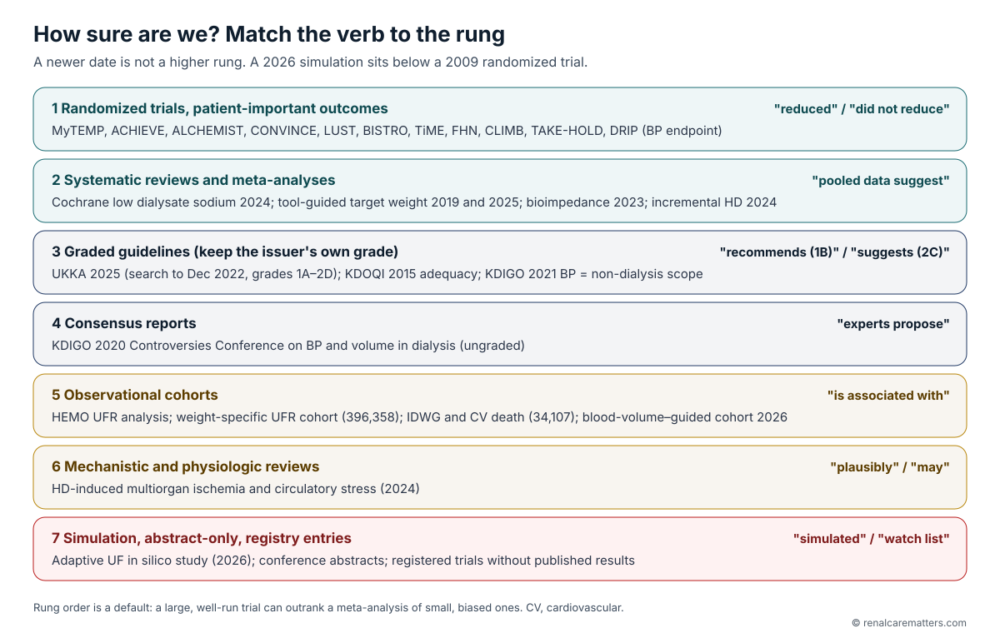
The evidence ladder used throughout this guide. Each level gets its own verb, so a reader can tell at a glance whether a sentence rests on a randomized trial, a pooled analysis, a graded guideline, expert consensus, an association, a mechanism, or a simulation.
- CV
- Cardiovascular
- HD
- Hemodialysis
- KDIGO
- Kidney Disease: Improving Global Outcomes
- KDOQI
- Kidney Disease Outcomes Quality Initiative
- UKKA
- UK Kidney Association
- UF
- Ultrafiltration
Two date traps to keep in mind
The UKKA guideline was published in 2025, but its systematic literature search covered articles published from January 2000 to 31 December 2022.2 It therefore could not weigh the 2025 spironolactone outcome trials, the 2025 technology meta-analysis or the 2025 incremental-therapy trials. Those appear beside the relevant UKKA recommendation as later evidence — they do not silently rewrite it. Second, the KDIGO 2021 BP guideline's intensive systolic target applies to chronic kidney disease (CKD) not receiving dialysis and is not a maintenance-HD target.4
Where the Fluid Is, and What Keeps BP Up While It Leaves
The intuition first. Think of the plasma as a small bucket sitting inside a much larger, waterlogged sponge. The dialyzer can only drain the bucket. Every liter that leaves the body during a session has to pass through the bucket on its way out, and the bucket is topped up only as fast as the sponge can push water back in. If you drain faster than the sponge refills, the bucket runs low — even though the sponge is still soaked. That is the whole story of "congested but hypotensive," and the rest of this section replaces the analogy with the real physiology.
1 · The compartments
Total body water divides into intracellular water and extracellular water; extracellular water divides again into the interstitial fluid that bathes cells and the plasma that circulates. The plasma is the smallest of these and is the only compartment the dialyzer touches. Congestion — peripheral edema, lung water, an elevated jugular venous pressure — is largely interstitial and pulmonary-extravascular, and it is this excess that bioimpedance spectroscopy (BIS) and lung ultrasound try to estimate. So when a clinician says a patient is "overloaded," they are usually describing the sponge; when a patient's BP falls during UF, the problem is usually the bucket.
2 · Plasma refill is the rate-limiting step
During UF, removing plasma water raises plasma oncotic pressure and lowers capillary hydrostatic pressure, so Starling forces favor movement of fluid from the interstitium back into the capillaries. How fast that happens depends on interstitial pressure and compliance (a patient with a lot of excess interstitial fluid generally refills more readily than one near euvolemia), plasma albumin, capillary permeability (inflammation and sepsis change it), and time. Refill is not instantaneous, and its rate varies between patients and within the same patient across a session. The ultrafiltration rate (UFR) is the variable the team controls; refill is the variable it can only estimate. When UFR exceeds refill for long enough, plasma volume falls — this is what a falling relative blood volume (RBV) trace shows. Note the word relative: an RBV curve reports a percentage change from the start of the session, not an absolute blood volume (ABV).
3 · What defends BP when plasma volume falls
A shrinking plasma volume reduces venous return and cardiac filling. Whether BP holds depends on compensation. The ventricle matters first: many patients on HD have a thickened left ventricle (LV) — left ventricular hypertrophy (LVH) — and diastolic stiffness, which put them on the steep part of the Frank–Starling curve, where a small fall in filling causes a large fall in stroke volume. Arteriolar constriction and the heart-rate response then defend pressure through the autonomic nervous system, which is often blunted by diabetes, age and uremia. Venous capacitance matters too: splanchnic and cutaneous veins can hold a large, mobile reserve of blood, and warming or vasodilation pools blood there and cuts preload further — the physiologic basis for cooling the dialysate. Arrhythmia, myocardial ischemia, infection, bleeding and drugs can each break this chain independently of any volume error.
4 · Why the consequence is more than a low reading
Recurrent falls in perfusion during HD are plausibly linked to injury in vulnerable vascular beds — the myocardium (regional wall-motion abnormalities, sometimes called myocardial stunning), the brain, the gut and the residual kidney. A 2024 review synthesizes this "circulatory stress" model and the microvascular endothelial dysfunction that both drives and results from it.8 This is mechanistic evidence: it explains why intradialytic hemodynamics matter, but it does not by itself prove that any single intervention improves survival. The KDIGO conference made the same point about UFR — higher rates are associated with mortality, biologic plausibility supports an ischemic link, but no randomized trial has shown that lowering UFR improves outcomes.1
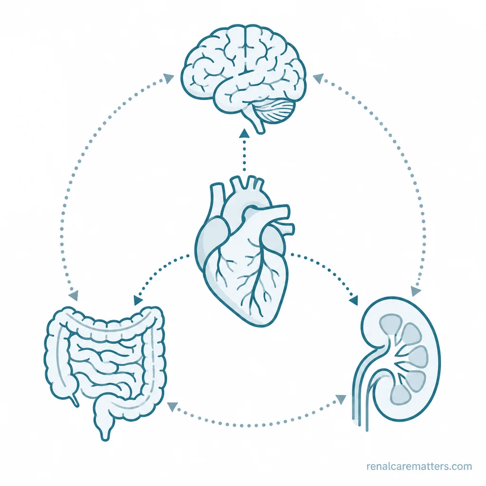
A symbol for the idea that repeated drops in blood flow during dialysis can affect the heart, brain, gut and kidneys together.
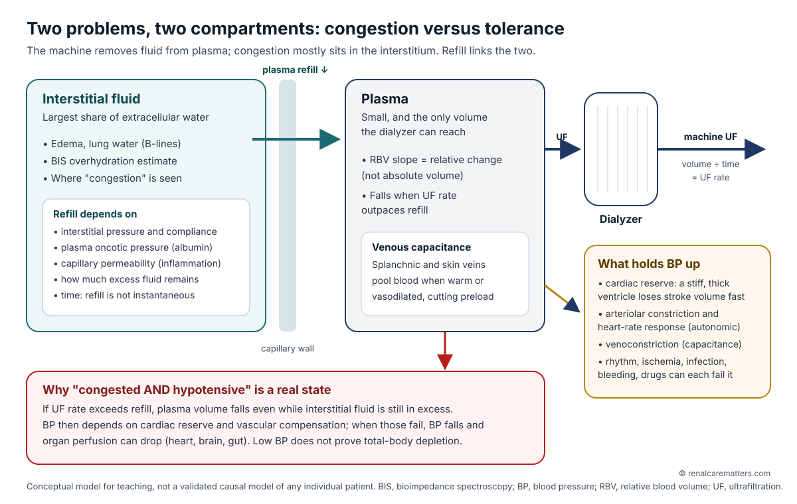
The dialyzer drains only the plasma. The plasma is refilled from the tissue fluid, and that refill takes time. If fluid is pulled off faster than it refills, blood pressure falls even though the tissues still hold too much fluid — so low blood pressure during dialysis does not mean the patient is dry.
- BIS
- Bioimpedance spectroscopy
- BP
- Blood pressure
- RBV
- Relative blood volume — percentage change from the start of the session
- UF
- Ultrafiltration
Five corollaries that prevent most errors
(1) Hypotension does not prove total-body fluid depletion. (2) A stable BP does not prove euvolemia. (3) Persistent hypertension is not always volume excess — arterial stiffness, sympathetic and renin–angiotensin activity, and drugs contribute. (4) A low interdialytic weight gain (IDWG) does not prove good fluid or nutritional status; it can reflect poor intake. (5) A single bioimpedance or lung-ultrasound reading is a snapshot of one compartment, not a target-weight prescription.
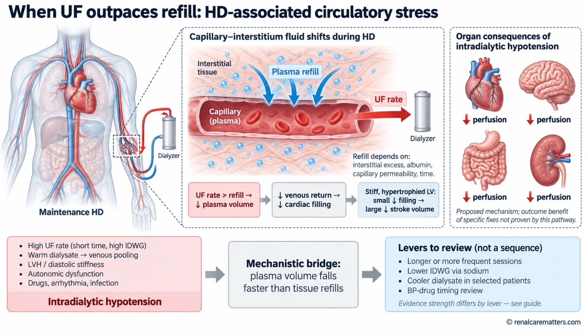
Fluid removal drains the blood faster than the tissues can refill it. When that happens the heart fills less, and a stiff heart pumps much less, so blood pressure and blood flow to the heart, brain, gut and kidneys can fall. The bottom row shows the main drivers and the levers worth reviewing.
- HD
- Hemodialysis
- UF
- Ultrafiltration
- IDWG
- Interdialytic weight gain
- LV
- Left ventricle
- LVH
- Left ventricular hypertrophy
- BP
- Blood pressure
Words That Are Often Used as Synonyms — and Are Not
Much of the confusion in volume management is linguistic. Two clinicians can agree that a patient is "at dry weight" while meaning a prescription, an estimate and a physiologic state respectively. KDIGO draws the key distinction explicitly: the target weight is the prescription and can vary from treatment to treatment, while the estimated dry weight is a clinical estimate of the weight at euvolemia; in acute illness or with severe symptoms it may be reasonable to keep a patient slightly above the estimated dry weight, but the long-term risks of chronic overload must be weighed.1
| Term | What it means here | What it is not |
|---|---|---|
| Target postdialysis weight | The weight prescribed as the goal for a session. | Not proof of euvolemia; not a fixed number. |
| Estimated dry weight | The clinician's current estimate of the weight at which the patient is euvolemic. | Not a measurement; it drifts with tissue mass and illness. |
| Actual postdialysis weight | The measured weight after the session. | Not interchangeable with the target when calculating IDWG. |
| Machine UF volume | Net fluid the machine removed from the blood circuit. | Not identical to change in patient mass (saline, oral intake, urine). |
| Convection volume (HDF) | Fluid filtered and replaced during hemodiafiltration (HDF) to clear solutes. | Not net fluid removal; most of it is returned. |
| Intradialytic / interdialytic | Within a session / between sessions. | Not interchangeable. |
| IDWG | Current predialysis weight minus the previous actual postdialysis weight. | Not "pre-weight minus target"; that is target deviation. |
| UFR | UF volume ÷ session duration, often also ÷ postdialysis weight (mL/kg/h). | Not a personal risk probability. |
| RBV vs ABV | Relative change in blood volume during a session vs an estimate of absolute blood volume. | Not the same measurement; RBV has no absolute baseline. |
| Residual kidney function (RKF) | Native kidney clearance and urine output while on dialysis. | Urine volume is not clearance. |
Are the Numbers Good Enough to Act On?
Before reviewing any pathway, ask whether the observations are reliable. Volume decisions are made on weights, BP readings and session logs that are each prone to systematic error, and a precise calculation built on a wrong weight is still wrong. The UKKA guideline is explicit that routine dialysis-unit BP readings should inform the safety of delivering a session rather than hypertension management, because they agree poorly with interdialytic ambulatory readings.2
Three silent substitutions to refuse
Do not replace a missing actual post-weight with the target weight when calculating IDWG. Do not treat "not recorded" as "normal." Do not merge planned and delivered treatment time — a 4-hour prescription delivered as 3 hours 20 minutes changes the UFR by a fifth.
Which Question Is the BP Reading Answering?
A BP number in HD can answer three different questions: does this patient have hypertension, is there an intradialytic pattern, and is it safe to continue this session. Different measurements suit each. Interdialytic ambulatory blood pressure monitoring (ABPM) is the reference standard for diagnosis; home blood pressure monitoring (HBPM) or standardized out-of-unit clinic readings suit ongoing management; routine pre-, intra- and postdialysis readings are best used for session safety.2 Observational data showing a U- or J-shaped relationship between routine predialysis systolic BP and mortality are confounded by illness and measurement error, whereas out-of-unit readings generally show a more linear relationship with outcomes — another reason not to treat the nadir of a routine-BP curve as a target.2
Home BP phenotyping shows how often unit readings mislead. In a 2026 Taiwanese cohort of 217 patients on thrice-weekly HD, patients were classified by predialysis BP (≥140/90 mm Hg) and a standardized 7-day home BP protocol (≥135/85 mm Hg). Nearly a third were misclassified by unit BP alone: 29.5% had sustained normotension, 24.0% a white-coat pattern, 6.9% masked hypertension and 39.6% sustained hypertension. Sustained hypertension was independently associated with left ventricular hypertrophy (LVH) and with arterial stiffness (brachial-ankle pulse wave velocity ≥1,800 cm/s). Masked hypertension had the strongest association with arterial stiffness. The white-coat pattern was not benign either: it carried higher arterial stiffness, and excess LVH appeared in untreated patients with that pattern.33 The study is cross-sectional and shows associations with remodeling, not outcomes. In practice, a week of standardized home readings is the cheapest way to find the masked hypertensive whose unit BP looks reassuring, and to avoid both over-treating and ignoring a white-coat pattern.
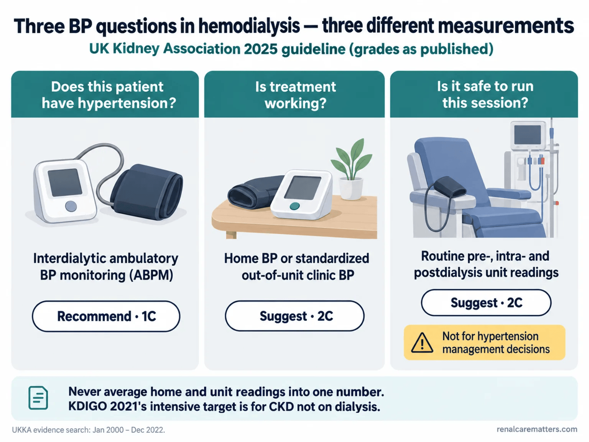
Each blood pressure measurement answers a different question: a 24–48-hour monitor diagnoses high blood pressure, home or standardized readings track treatment, and readings taken in the dialysis unit mainly tell the team whether the session is safe to run.
- ABPM
- Ambulatory blood pressure monitoring
- BP
- Blood pressure
- CKD
- Chronic kidney disease
- KDIGO
- Kidney Disease: Improving Global Outcomes
- UKKA
- UK Kidney Association
| Source and status | What it says (original grade) | Measurement context and limits |
|---|---|---|
| UKKA 2025 Graded guideline; evidence search to 31 Dec 2022 | Rec 1: ABPM to diagnose hypertension in HD (1C). Rec 2: HBPM or standardized out-of-unit clinic BP to monitor and guide treatment (2C). Rec 3: use routine unit BP for session safety, not hypertension management (2C). | Out-of-unit measurement preferred for management decisions. |
| UKKA 2025, Rec 5–7 | Where in-center readings are used: predialysis systolic 140–165 mmHg (2B), diastolic 60–100 (2C); postdialysis systolic 120–140, diastolic ≥70 (2C). Aim for the lower end of the systolic range unless IDH becomes more frequent or there is a history of frequent IDH (2D). Individualize by age and comorbidity (2C). | Non-standardized in-center readings only. No HBPM target was set because of sparse evidence. |
| KDIGO 2020 Controversies conference consensus | Accepted hypertension definitions and BP targets in dialysis have not been determined. Any symptomatic BP fall or nadir intradialytic systolic BP <90 mmHg should prompt reassessment of UFR, treatment time, IDWG, dry-weight estimation and BP medicines — without sacrificing euvolemia.1 | Ungraded. Prompts reassessment; does not set a target. |
| KDIGO 2021 BP in CKD | Intensive systolic target for CKD not on dialysis.4 | Scope boundary. Not a maintenance-HD target. |
The only randomized test of BP targets in HD that the guidelines could draw on is the Blood Pressure in Dialysis pilot, which compared an intensive predialysis systolic goal of 110–140 mmHg with a standard goal of 155–165 mmHg and was designed to assess feasibility, not outcomes.1 Any target displayed at the bedside should therefore carry its source, its measurement method and its grade; a "BP controlled" badge based on a single routine session reading is not meaningful.
Three Axes, Kept Separate
Instead of a single "volume status" label, hold three independent questions. Congestion evidence: present, absent on the assessment available, or uncertain. UF tolerance in reviewed sessions: adequate, recurrently impaired, or uncertain. RKF contribution: measured (with date and method), urine output only, or unknown. Then attach modifiers that shift interpretation without being scored: cardiac reserve, autonomic dysfunction, arrhythmia, frailty, vascular disease, nutrition and body-composition change, acute illness, the current prescription, medications, and the patient's own account of treatment burden.
This is a teaching lens authored for this guide, not a validated classification. Its purpose is to stop an uncertain case being forced into a confident branch. "Congested and hypotensive" is a first-class state, and "information needed" is a legitimate result.
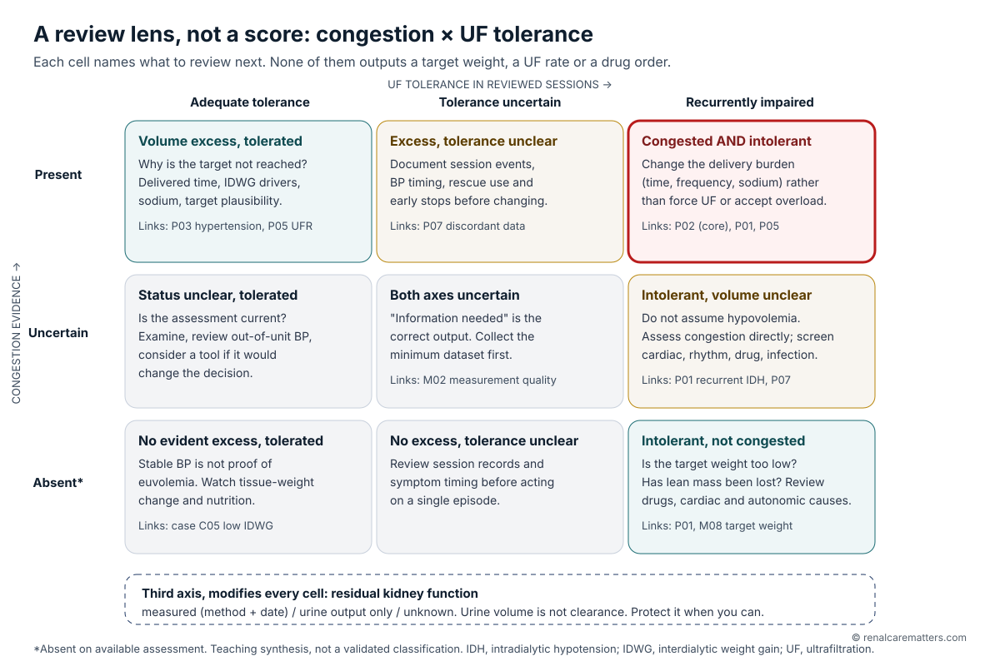
A grid for thinking, not a score. Find where the patient sits on two questions — is there too much fluid, and do they tolerate fluid removal — and each box suggests what to look at next. The hardest box is "too much fluid but cannot tolerate removing it."
- IDH
- Intradialytic hypotension
- IDWG
- Interdialytic weight gain
- UF
- Ultrafiltration
- P01–P07
- The seven review pathways in this guide
- M02, M08
- Measurement-quality and target-weight sections
Seven Review Pathways
Each pathway structures a review: identify the pattern, check the data, consider competing mechanisms, list options with their tradeoffs, and decide how to reassess. None outputs a target weight, a UFR or a drug order, and a patient can — and often should — enter more than one. They are editorial syntheses of the sources cited, offered for local adaptation and clinical judgment.
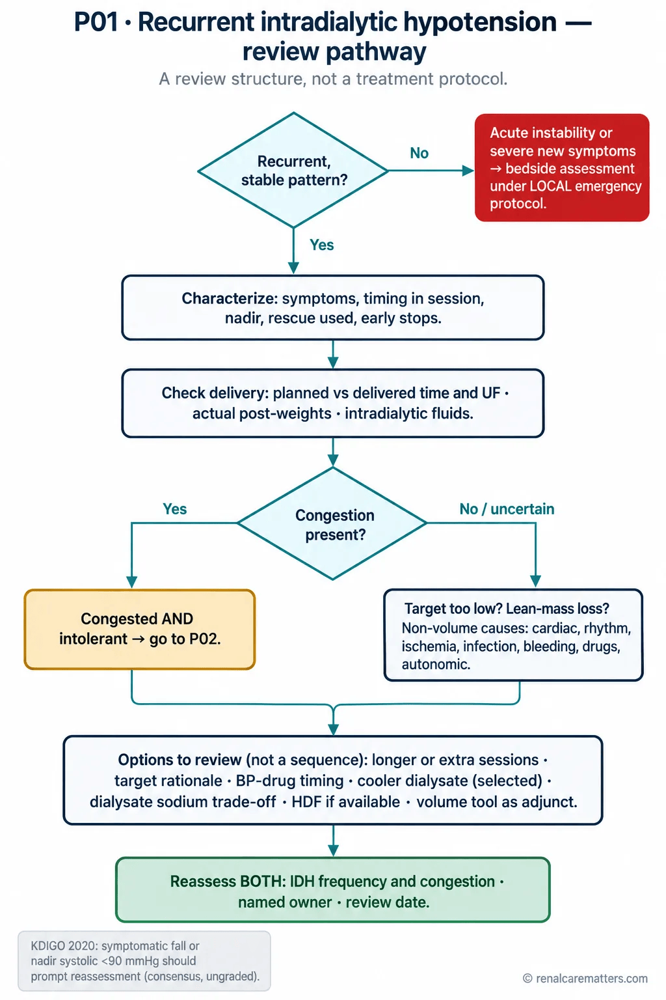
A step-by-step review for repeated low blood pressure during dialysis: rule out an emergency, describe the pattern, check what was actually delivered, decide whether the patient is also fluid-overloaded, then review options and plan a follow-up that watches both low blood pressure and congestion.
- IDH
- Intradialytic hypotension
- UF
- Ultrafiltration
- BP
- Blood pressure
- HDF
- Hemodiafiltration
- KDIGO
- Kidney Disease: Improving Global Outcomes
- P01, P02
- Review pathways in this guide
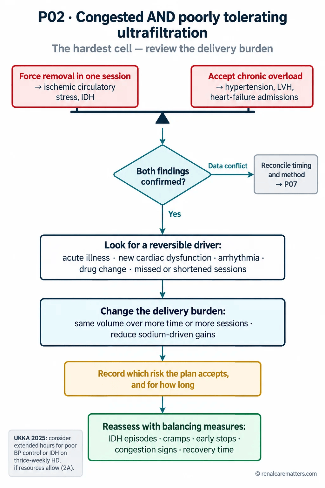
When a patient is both fluid-overloaded and cannot tolerate fluid removal, both extremes cause harm. The better path is usually to spread removal over more time or more sessions and cut the salt that drives fluid gain, while tracking both sides.
- IDH
- Intradialytic hypotension
- LVH
- Left ventricular hypertrophy
- BP
- Blood pressure
- HD
- Hemodialysis
- UKKA
- UK Kidney Association
- P07
- Discordant-measurements pathway
Ultrafiltration Rate, Treatment Time and Frequency
UFR is simply volume divided by time, which is why it is the most modifiable lever in the field: for a fixed volume, adding time lowers the rate in direct proportion. Removing 3.5 L from a 70 kg patient over 4 hours is 12.5 mL/kg/h; over 4.5 hours it is 11.1 mL/kg/h. The physiology says this should help, because a lower rate gives refill more time to keep pace. The evidence is real but observational, and it is worth reading carefully.
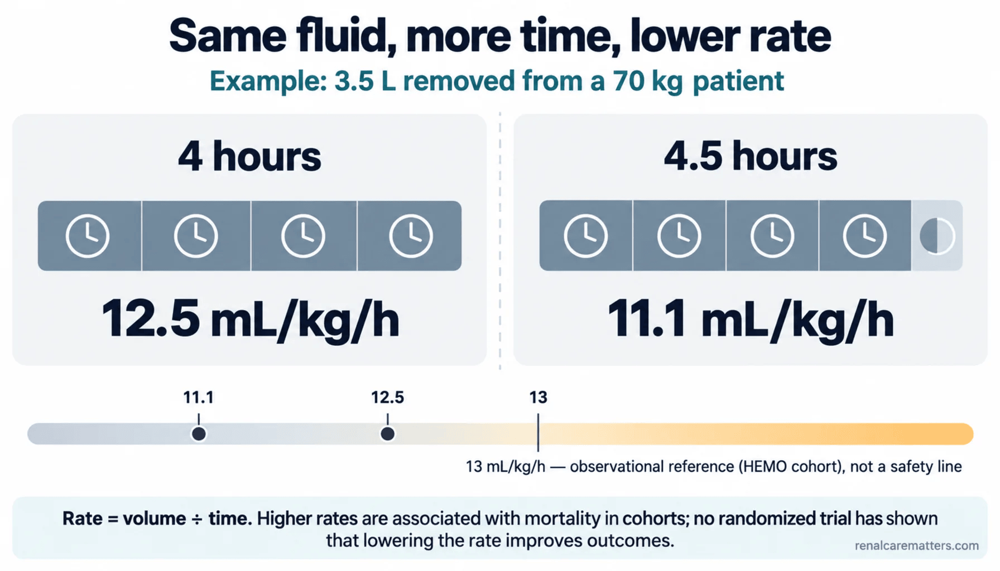
Removing the same 3.5 liters over 4.5 hours instead of 4 hours lowers the rate of removal from 12.5 to 11.1 mL per kg per hour. The 13 mark is a reference from an observational study, not a line between safe and unsafe.
- UF
- Ultrafiltration
- HEMO
- Hemodialysis Study — a US randomized trial whose data were later analyzed for UF rate
In a secondary analysis of the Hemodialysis (HEMO) Study, 1,846 patients on thrice-weekly HD with UFR above 13 mL/kg/h had higher all-cause and cardiovascular mortality than those at or below 10 mL/kg/h (adjusted hazard ratios 1.59 and 1.71); rates of 10–13 mL/kg/h were not associated with excess mortality overall, although spline analysis suggested risk began to rise above 10 mL/kg/h.5 In 396,358 United States patients, the UFR associated with a given excess mortality risk depended on body weight but not in a one-to-one ratio, and differed by sex, age-weight combination and dialysis vintage.6 Larger IDWG is likewise associated with higher cardiovascular death in a cohort of 34,107 patients.7 KDIGO concluded that, in the absence of randomized evidence that lowering UFR improves outcomes, a single UFR threshold for all patients at all times is likely inappropriate, and that decisions may differ treatment to treatment.1
Why 13 mL/kg/h is a reference point, not a safety line
The 13 mL/kg/h figure comes from a cohort category boundary, not from a trial that randomized patients to rates. Being at 12.9 is not "safe" and 13.1 is not "dangerous." It is reasonable to use it as a prompt to review — and the calculator below reports below/at/above it with the same caution at every value — but never as permission or prohibition.
Does adding time or sessions help? What the trials show
The Time to Reduce Mortality in End-Stage Renal Disease (TiME) trial tried to answer this pragmatically: 266 units randomized incident patients to a default session of at least 255 minutes or usual care. Uptake was too low — mean session duration differed by only about 9 minutes (216 vs 207) — and the trial stopped at a median 1.1 years with no difference in mortality or hospitalization.27 That is a failed test of the question, not evidence that time does not matter. The Frequent Hemodialysis Network (FHN) daily trial randomized 245 patients to six versus three in-center sessions per week; frequent HD improved the coprimary composites of death or change in left ventricular mass (hazard ratio 0.61) and death or change in physical-health score (0.70), improved hypertension and phosphate control, and increased vascular-access interventions (hazard ratio 1.71).28 The KDOQI 2015 adequacy update added explicit emphasis on volume and BP control and on flexibility in frequency, duration and UFR.3 UKKA suggests extended hours for patients who fail to achieve BP control or experience IDH on standard thrice-weekly HD where resources allow (2A).2
Practical decision point
When a patient repeatedly needs a high UFR, first check whether delivered time has drifted below prescribed time. If it has not, the next question is whether the volume can be reduced (sodium, thirst, urine output) or spread over more time (longer sessions, an extra session), weighed against cost, chair capacity, transport and the patient's own priorities. Record the reason for the choice; there is no evidence-based number of minutes to add.
Dietary Sodium, Fluid Intake and Dialysate Sodium
Water follows sodium. A sodium load raises plasma osmolality, triggers thirst, and the water the patient drinks to correct it is held in the extracellular space until the next session — so IDWG is largely a sodium problem disguised as a fluid problem. That is why fluid restriction without salt restriction tends to fail. UKKA recommends dietary salt reduction to a maximum of 5 g/day (1B) and suggests individualized fluid restriction together with salt reduction, considering urine output, gains and UF (2D).2 Note the units: 5 g of sodium chloride contains about 2 g of sodium, because sodium is roughly 39% of the mass of salt.
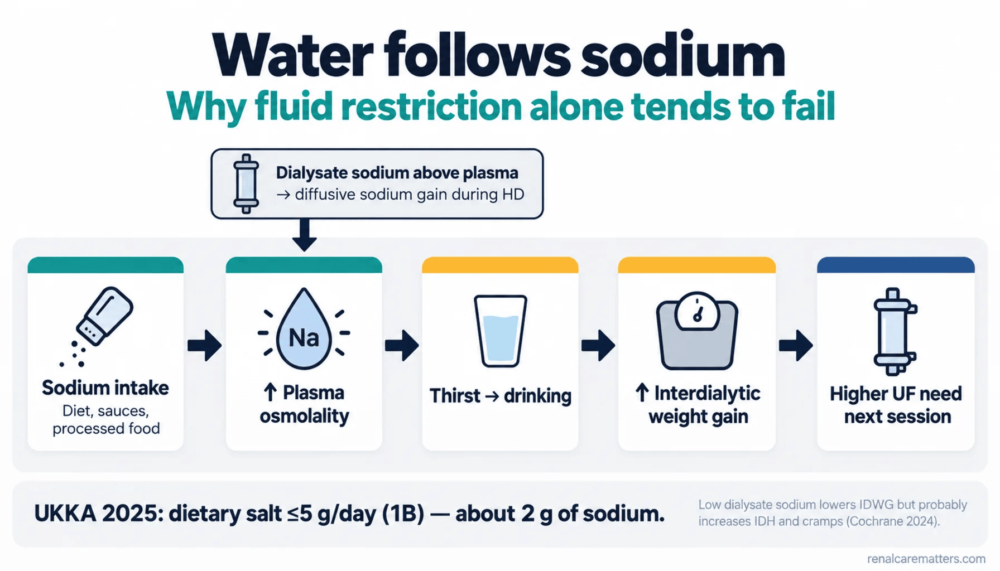
Salt raises the concentration of the blood, which causes thirst; the water a patient drinks is held until the next session, so the weight gain between sessions is mostly driven by salt. Dialysate with more sodium than the blood can add salt during the session too.
- Na
- Sodium
- HD
- Hemodialysis
- UF
- Ultrafiltration
- IDWG
- Interdialytic weight gain
- IDH
- Intradialytic hypotension
- UKKA
- UK Kidney Association
The dialysate is the second sodium source. If dialysate sodium exceeds plasma sodium, diffusion adds sodium during the session, which can stabilize intradialytic BP but drive post-session thirst. The 2024 Cochrane review (17 randomized studies, 509 patients, mostly short crossover trials, several using outdated practice) found that low dialysate sodium (<138 mM) reduces IDWG (mean difference −0.36 kg, high certainty) and antihypertensive use, and probably reduces predialysis mean arterial pressure and left ventricular mass index — but probably increases IDH (risk ratio 1.58; 13 studies, 15,764 sessions) and cramps (risk ratio 1.84), both moderate certainty.16 Those IDH counts are sessions, not people, and effects on death and hospitalization remain uncertain.
| Lever | Expected benefit | Expected cost | Review with |
|---|---|---|---|
| Dietary salt reduction | Less thirst, lower IDWG, lower BP | Palatability, nutrition in poor appetite | Renal dietitian |
| Individualized fluid allowance | Lower IDWG | Thirst distress; fails without salt reduction | Urine output, IDWG trend |
| Lower dialysate sodium | Lower IDWG and BP | More IDH and cramps | Session logs; predialysis sodium |
| Higher dialysate sodium or sodium profiling | Session stability | Post-session thirst, higher gains | IDWG trend; see profiling guide |
A large pragmatic trial of dialysate sodium on hard outcomes, RESOLVE, is registered; this guide makes no statement about its status or results until they are published in a peer-reviewed source.
Temperature and Other Prescription Levers
Cooling. Warmth vasodilates cutaneous and splanchnic beds and pools blood away from the heart; cooler dialysate counteracts this. For the hypotension-prone patient, UKKA suggests lowering dialysate temperature to reduce IDH (2A).2 That is a different question from the one tested in the Personalised Cooler Dialysate (MyTEMP) trial: 84 Ontario centers serving 15,413 patients were randomized to a center-wide policy of dialysate 0.5–0.9 °C below each patient's body temperature (floor 35.5 °C) or a standard 36.5 °C. Achieved temperatures were 35.8 vs 36.4 °C, and the composite of cardiovascular death or hospitalization for myocardial infarction, ischemic stroke or heart failure did not differ (adjusted hazard ratio 1.00, 96% confidence interval 0.89–1.11); the mean intradialytic systolic drop was almost identical.15 MyTEMP argues against cooling everyone for cardiovascular protection; it does not settle targeted cooling for a symptomatic individual, which remains a reasonable trial with attention to thermal discomfort.
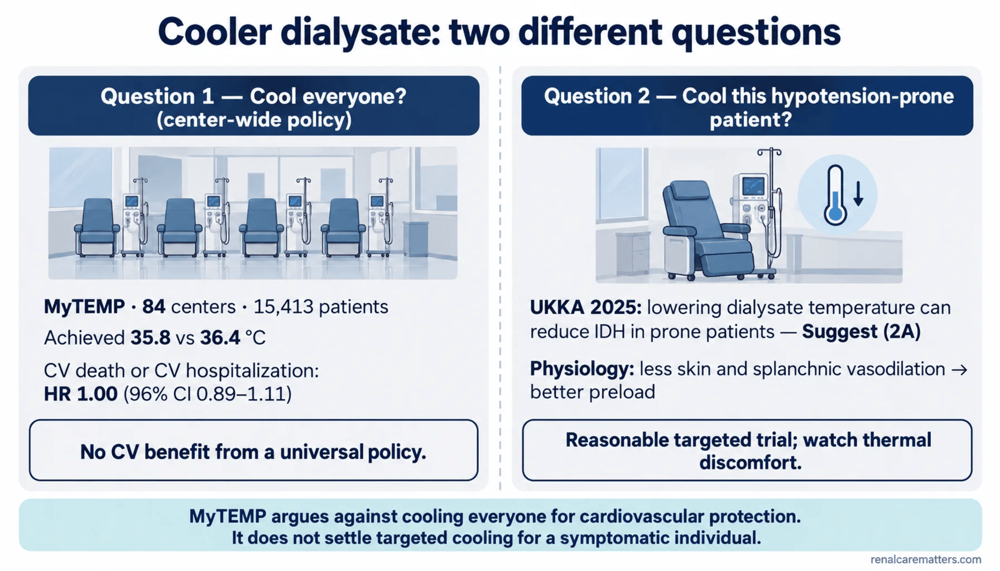
A large trial found that cooling the dialysate for everyone in a unit did not reduce heart events. That is a different question from cooling the dialysate for one patient whose blood pressure keeps dropping, which the UK guideline suggests can help.
- CV
- Cardiovascular
- HR
- Hazard ratio
- CI
- Confidence interval
- IDH
- Intradialytic hypotension
- UKKA
- UK Kidney Association
Buffer, magnesium and calcium. UKKA recommends bicarbonate rather than acetate dialysate to reduce IDH risk (1B) and suggests avoiding low dialysate magnesium (≤0.25 mmol/L), particularly with dialysate calcium of 1.25 mmol/L, in patients at risk of IDH (2D).2 Specific dialysate concentrations for your unit need review against full sources and local equipment.
Profiling and sequential UF. Isolated (sequential) UF, UF profiling and sodium profiling are distinct interventions with distinct evidence and tradeoffs. They are covered with prescription worksheets in Iso-UF, Sodium & UF Ramping and should not be assumed protective for all patients.
BP-Lowering Drugs, Timing and Pressors
Three questions keep medication decisions honest: what is the indication (BP lowering, cardioprotection, heart-failure therapy, rate control), what happens to the drug during HD (dialyzability and timing), and what is the monitoring burden. Doses are deliberately absent from this guide; use a current, locally verified prescribing reference.
What the UKKA recommends (graded, search to 2022)
| UKKA recommendation | Grade |
|---|---|
| Rec 25: BP-lowering medication to reduce all-cause and cardiovascular mortality in adult dialysis patients | 1B |
| Rec 26: β-blockers first line, calcium channel blockers (CCB) second line in HD, based on BP-lowering efficacy | 2B |
| Rec 27: angiotensin-converting enzyme inhibitors (ACEi) third line in HD, because of hypotension and discontinuation risk | 2B |
| Rec 29: mineralocorticoid receptor antagonists (MRA) may be considered for difficult-to-control BP, with careful potassium monitoring | 2B |
| Rec 30: addresses omitting BP medicines before sessions; where they contribute to IDH, consistent evening dosing is suggested instead* | 2D |
| Rec 31: where β-blockers are used, those with low dialyzability are generally preferred | 2C |
| Rec 33: L-carnitine and/or oral midodrine may be considered within a multifaceted IDH approach; supporting data are limited | 2C |
*The published wording of Rec 30 appears to be missing a word; read it with its second sentence, which favors consistent evening dosing over pre-session omission when drugs are implicated in IDH.2
What the trials add
Timing. In the cluster-randomized TAKE-HOLD trial (10 units, 131 participants, 4 weeks), taking versus holding BP drugs before HD did not meet noninferiority for the primary outcome of asymptomatic IDH (difference 8%, 95% confidence interval −3% to 19%), but taking them reduced uncontrolled predialysis hypertension (difference −15%).17 Failed noninferiority is not proof that holding is better; it means the trade-off is real and individual.
Choice of agent. In the Hypertension in Hemodialysis Patients treated with Atenolol or Lisinopril (HDPAL) trial, 200 hypertensive patients with LVH were randomized to thrice-weekly post-dialysis atenolol or lisinopril. Ambulatory BP improved similarly, but serious cardiovascular events were more frequent with lisinopril (incidence rate ratio [IRR] 2.36).19 The trial was open-label and selected; it informs, but does not prove, a class effect.
Mineralocorticoid receptor antagonists — the newest and most important correction. Two large placebo-controlled trials published in 2025, after UKKA's search window, examined spironolactone for cardiovascular protection. ACHIEVE screened 3,689 patients, enrolled 3,565 into an open-label run-in, and randomized 2,538 who tolerated it; the composite of cardiovascular death or heart-failure (HF) hospitalization did not differ (hazard ratio 0.92, 95% confidence interval 0.78–1.09), all-cause death did not differ, and the monitoring committee stopped the trial for futility at a planned interim analysis.21 ALCHEMIST randomized 644 high-risk HD patients after run-in; the primary cardiovascular composite was identical in both arms (hazard ratio 1.00, 0.73–1.36), and the trial stopped early because sponsor funding ended — not for futility.22 Together they mean spironolactone should not be started for cardiovascular protection in maintenance dialysis. They do not test BP lowering in an individual with resistant hypertension, which is the narrower indication UKKA Rec 29 addresses — and the potassium cost still applies.
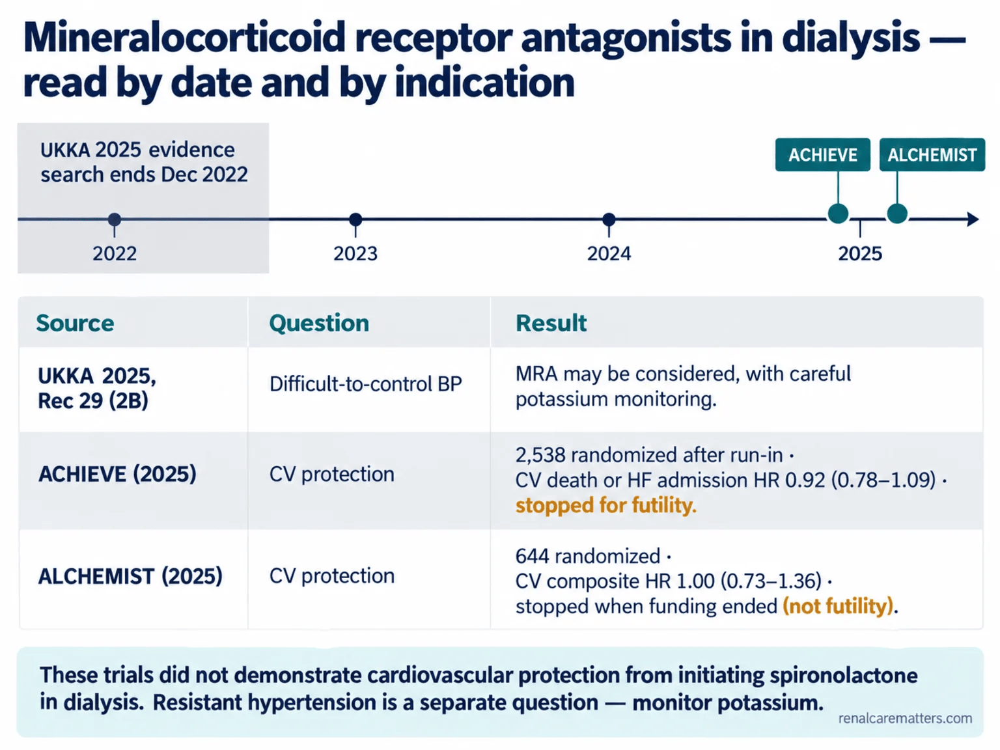
The UK guideline's evidence search stopped at the end of 2022, before two large 2025 trials showed that spironolactone does not protect the heart in people on dialysis. The guideline's narrower suggestion — considering it for hard-to-control blood pressure — is a separate question.
- MRA
- Mineralocorticoid receptor antagonist
- UKKA
- UK Kidney Association
- BP
- Blood pressure
- CV
- Cardiovascular
- HF
- Heart failure
- HR
- Hazard ratio
Midodrine. The 2004 systematic review behind its use pooled small, methodologically weak studies showing higher BP during midodrine exposure; its title overstates certainty, and no hard-outcome benefit has been shown.20 Albumin infusion reduced IDH in a crossover trial of 65 hospitalized hypoalbuminemic patients (249 sessions); that inpatient result should not become an outpatient rescue protocol.32
Changing the Target Weight — What Supports It, What to Watch
Target weight is a dynamic prescription. It should move when tissue mass changes (weight lost from illness or poor intake will otherwise be "removed" as fluid), when urine output changes, and when examination, BP pattern and symptoms change. The best randomized evidence for probing it is the Dry-weight Reduction in Hypertensive Hemodialysis Patients (DRIP) trial: 150 hypertensive patients, with 100 assigned to additional UF without extra time. Post-weight fell about 1 kg by 8 weeks and 44-hour ambulatory systolic BP fell 6.6 mmHg (95% confidence interval −12.2 to −1.0) relative to control.18 That is a BP endpoint over 8 weeks, not survival, and probing increased intradialytic hypotensive symptoms. DRIP supports careful, monitored probing in hypertensive patients; it does not support a fixed decrement per session.
A target-weight change is a documented decision
Record the rationale, the supporting and conflicting data, the change intended, what will be monitored, what would make you stop or reverse, and when it will be reviewed. Do not derive a target automatically from a BIS overhydration value, and do not assume all weight loss is fluid. A target that is too low can cause hypotension and faster loss of RKF.1
Residual Kidney Function and Incremental Treatment
Residual function does two jobs in volume management: it removes fluid and sodium continuously, which lowers IDWG and the UFR needed, and it adds solute clearance. It is also vulnerable — hypotension, nephrotoxins and aggressive UF can hasten its loss. That is why the incremental approach (starting with fewer or shorter sessions while RKF is substantial) is attractive, and why its evidence must be read by design. Urine output is useful but is not clearance; a decision about frequency should rest on a dated, timed collection with urea clearance (Kru), alongside potassium, fluid and nutritional control. KDOQI 2015 allows dose and frequency to account for measured RKF.3
| Study | Design and population | Main result | Read it as |
|---|---|---|---|
| Incremental vs conventional HD meta-analysis (online 2023; issue 2024) | 36 studies, 138,939 participants, mostly observational | Mortality odds ratio 0.87 (0.72–1.04); lower hospitalization and RKF loss with incremental HD24 | Selection and confounding dominate; not proof of equivalence |
| Once-weekly HD + low-protein, keto-analogue diet vs twice-weekly HD (2025) | 30 randomized incident patients, urine ≥800 mL/day | Better urine volume and RKF with the combined strategy25 | Diet co-intervention; cannot isolate frequency; small |
| Twice- vs thrice-weekly HDF at start (2025) | 150 randomized, Kru ≥2.5 mL/min, open-label | No difference in 12-month glomerular filtration rate (GFR) decline or clinical outcomes; 69 vs 123 sessions/year26 | HDF-specific; selected; short follow-up |
| BISTRO (2023) | 439 incident HD patients with RKF | Adding bioimpedance to a structured protocol did not slow progression to anuria10 | Structured fluid assessment was the comparator |
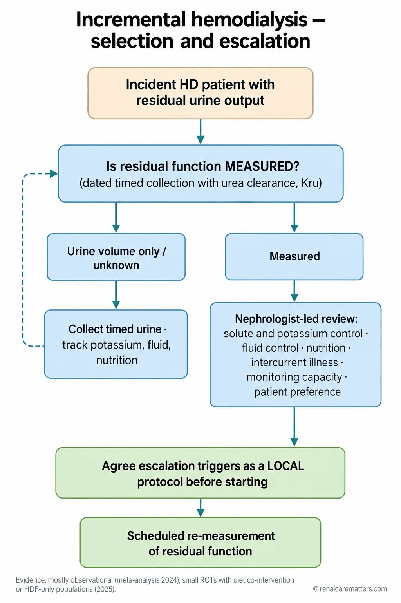
Before starting dialysis less often, the team should measure how much the kidneys still clear with a timed urine collection — urine volume alone is not enough — and agree in advance what changes would trigger more frequent dialysis.
- HD
- Hemodialysis
- Kru
- Residual urea clearance
- RCT
- Randomized controlled trial
- HDF
- Hemodiafiltration
The defensible practice is nephrologist-led selection of patients with measured, adequate RKF, explicit escalation criteria agreed before starting, and scheduled re-measurement — not automatic frequency reduction from urine output.
Instrument-Assisted Volume Assessment
Each tool sees one compartment, at one moment, with its own assumptions. None returns "liters to remove." UKKA concluded that there is inadequate evidence to recommend one technology as superior to another or to clinical assessment (2C).2
| Tool | What it measures | Main limitation |
|---|---|---|
| Lung ultrasound (LUS) B-lines | Extravascular lung water — pulmonary congestion | Timing in the cycle, operator, nonvolume causes of B-lines |
| Bioimpedance spectroscopy (BIS) | Extracellular vs intracellular water; model-based "overhydration" | Body-composition model assumptions; posture and timing |
| Relative blood volume (RBV) monitoring | Percentage change in blood volume during the session | No absolute baseline; refill varies |
| Absolute blood volume (ABV) estimation | Estimated circulating volume at a point in the session | Device-specific; limited outcome data |
| Inferior vena cava (IVC) and other point-of-care ultrasound (POCUS) | Venous filling at a moment | Respiratory variation, operator, intra-abdominal pressure |
| Natriuretic peptides | Myocardial wall stress | Raised by kidney failure and cardiac disease independently of volume |
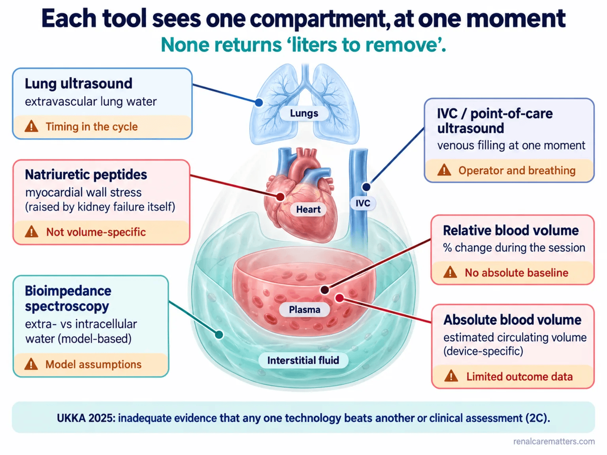
Each volume test looks at a different part of the body's fluid — lung water, total body water, the blood itself, the large vein near the heart, or heart strain — at one point in time. None of them tells you exactly how much fluid to remove.
- IVC
- Inferior vena cava
- UKKA
- UK Kidney Association
What the outcome trials and meta-analyses show
The Lung water by Ultra-Sound guided Treatment (LUST) trial enrolled 367 high-cardiovascular-risk HD patients. A lung ultrasound–guided strategy relieved congestion more often (78% vs 56%) but did not reduce the primary composite of death, nonfatal myocardial infarction or decompensated heart failure (hazard ratio 0.88, 0.63–1.24); recurrent heart-failure findings were post hoc.9 BISTRO did not show slower loss of RKF with bioimpedance added to a structured protocol.10 The older Crit-Line Intradialytic Monitoring Benefit (CLIMB) trial (443 patients, one device and protocol) found more hospitalizations and higher mortality with blood-volume monitoring — a historical warning that a monitoring protocol can harm, not a verdict on modern devices.14
Pooled analyses point in different directions because they pool different things. A 2019 meta-analysis of 12 trials found no mortality reduction (rate ratio 0.92, 0.57–1.51) but a modest systolic BP reduction.11 A 2023 bioimpedance meta-analysis (15 trials, 2,763 patients, HD and PD) found a pooled mortality reduction (0.71, 0.51–0.99) that was not significant in the HD-only subgroup (0.72, 0.42–1.22).13 A 2025 meta-analysis of 21 trials and 4,239 patients found fewer cardiovascular events with technology-guided dry-weight adjustment (relative risk 0.79, 0.71–0.88), a bioimpedance-subgroup mortality reduction (0.67), and more muscle cramps (rate ratio 1.09).12 These reviews share trials, so their patient numbers must not be added; endpoint definitions and risk of bias differ. The honest summary: tools help confirm or refute clinical suspicion and may reduce some events, the hard-outcome signal is inconsistent, and harms such as cramps are real. Neither "technology has never helped" nor "technology proves survival benefit" is supported.
Hemodiafiltration, Extended Hours and Other Settings
In the CONVINCE trial, 1,360 patients who were candidates for high-dose HDF (convection volume ≥23 L per session) were randomized to high-dose HDF or high-flux HD; death from any cause was lower with HDF (17.3% vs 21.9%; hazard ratio 0.77, 0.65–0.93) over a median 30 months.23 The population was selected for access and capability to reach that convection volume. Convection volume is not net fluid removal, and CONVINCE was not a trial of UF intolerance. UKKA suggests online HDF could be trialed in symptomatic IDH (2B) but only after alternative causes have been addressed (2C).2 Readers wanting the mechanics should see Hemodiafiltration Deep Dive.
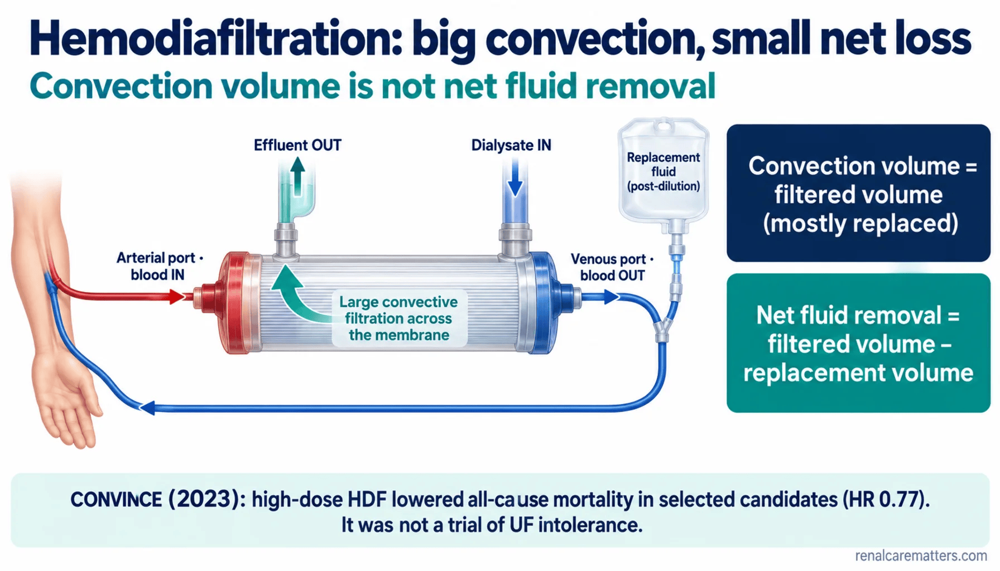
In hemodiafiltration a lot of fluid is filtered out of the blood to clear waste, but most of it is put back as clean replacement fluid. Only the difference is actually removed from the patient.
- HDF
- Hemodiafiltration
- UF
- Ultrafiltration
- HR
- Hazard ratio
Home, nocturnal and extended-hours HD lower UFR by design and need their own surveillance; numeric rules from in-center HD should not be transposed to them, nor to PD, AKI, intensive care or continuous therapies.
Symptoms, Recovery and Reassessment
The patient's report is clinical data. Map symptoms across the whole cycle: before the session (dyspnea, edema, orthopnea after the long interval), during (cramps, dizziness, nausea, chest discomfort), after (post-dialysis fatigue and recovery time), and between sessions (thirst, function). KDIGO emphasizes building symptoms into prescription discussions and communicating risk–benefit trade-offs clearly.1 Any named patient-reported outcome instrument should be validated and licensed for your population before it enters routine use. Neither "feels better" nor "BP improved" alone shows that both congestion and tolerance are controlled — track a benefit measure and a balancing measure together. For the fatigue side, see Post-Dialysis Fatigue.
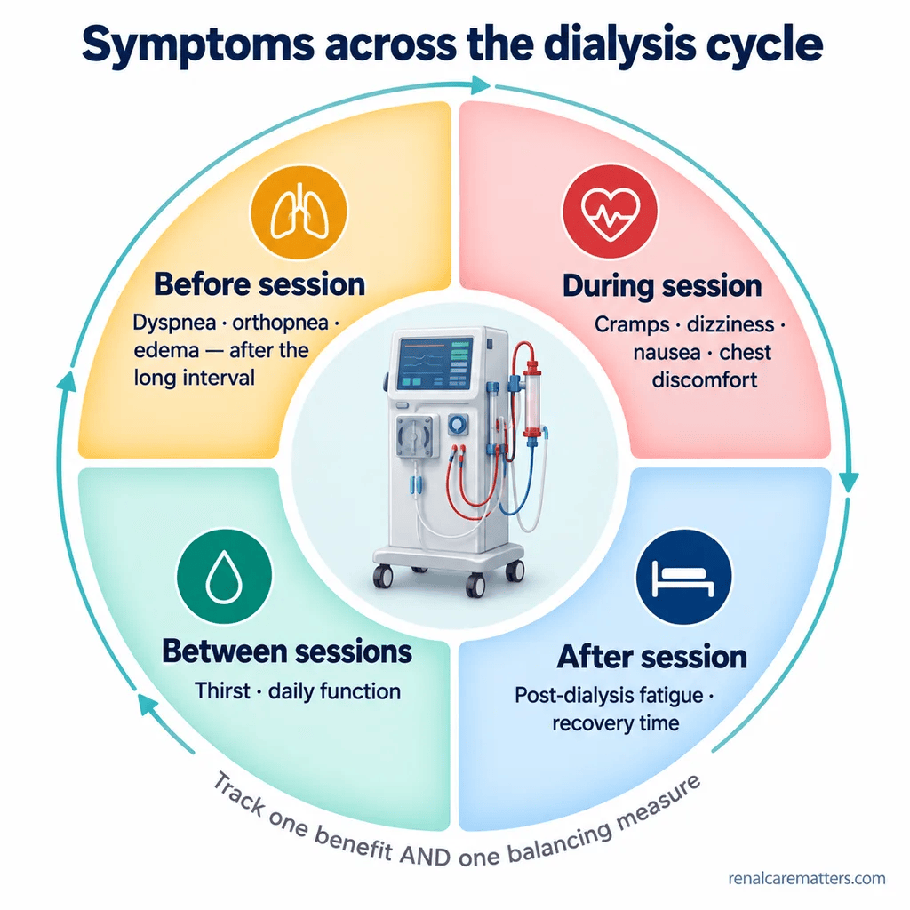
Different symptoms point to different problems depending on when they happen: breathlessness before a session suggests fluid overload, cramps and dizziness during it suggest poor tolerance, and fatigue afterward affects recovery.
Four Transparent Arithmetic Tools
These tools do arithmetic and show their working. They do not classify a result as safe, prescribe a weight or a rate, or store anything: values stay in this browser tab, are not sent anywhere, and clear when you press Reset or leave the page. Every result is an arithmetic estimate that needs clinical interpretation.
A · Ultrafiltration rate
B · Time needed at a chosen rate
C · Interdialytic weight gain and target deviation
D · Planned machine UF accounting
Use after you have chosen the intended postdialysis weight. Enter only fluids that will actually reach the patient; do not count priming or rinse-back that is not returned, and do not count the same saline twice.
Eight Fictional Teaching Cases
All cases are invented for teaching. Each ends with what is still unknown and a reassessment plan, because in real practice the right answer is usually a sequence of reviews, not a single order.
C01 · Congested and hypotensive with a weak heart
Facts. A 68-year-old with ischemic cardiomyopathy has bilateral crackles, rising predialysis weights, and IDH requiring saline in four of the last six sessions, each in the third hour. UF goals are being missed by about 1 kg per session.
Reasoning. Both axes are positive: congestion is present, and tolerance is recurrently impaired. Raising UFR to "catch up" will worsen the third-hour falls; leaving the target unmet will worsen congestion. The physiology points to time — the same volume over longer or more frequent sessions lowers the rate the failing ventricle must withstand — plus sodium-driven gains, BP-drug timing, rhythm, and a cardiology review. Saline given during sessions is partly undoing the UF and belongs in the accounting.
Still unknown. Ejection fraction now; rhythm during episodes; delivered vs prescribed time; dietary sodium. Reassess: IDH episodes, saline use, crackles and weights over the next two weeks, with a named owner. Pathways P02 and P01.
C02 · High UFR after shortened sessions
Facts. Prescribed 240 minutes; transport problems have cut delivered time to 195–205 minutes for a month. The calculated UFR on the delivered time is 14–15 mL/kg/h.
Reasoning. On the prescribed time the same volume would be about 12 mL/kg/h. The problem is delivery, not intake. The first intervention is logistical — schedule, transport, chair — not a lecture about fluid. Calculate UFR on delivered time and say so.
Reassess: delivered minutes and UFR on delivered time for four weeks. Pathway P05.
C03 · High unit BP, normal home BP
Facts. Predialysis systolic readings are 170–180 mmHg after a rushed arrival; a week of validated home readings averages 128/76.
Reasoning. UKKA places routine unit readings in the session-safety role and prefers out-of-unit readings for management. The discordance favors measurement context over drug escalation; consider ABPM if doubt remains.
Reassess: repeat home series; standardized seated reading before the next review. Pathways P03 and P07.
C04 · New to HD, still passing urine
Facts. Started HD 6 weeks ago; reports about 1 L of urine daily; no timed collection. The family asks whether twice weekly would be enough.
Reasoning. Urine volume is not clearance. The incremental trials enrolled patients with measured function and agreed monitoring, and the strongest small trial combined frequency with a diet change. The right next step is a timed collection, potassium and fluid trends, and an agreed escalation plan — not a frequency change on today's information.
Reassess: collection result, then a nephrologist-led decision. Pathway P06.
C05 · "Excellent" IDWG in a patient losing weight
Facts. IDWG has fallen to 0.5–0.8 kg; the post-weight has drifted 4 kg below its level three months ago; appetite is poor and IDH is new.
Reasoning. Low gains here likely reflect low intake. If lean mass has been lost but the target has not moved, the machine is now removing fluid the patient needs to keep, which would explain the new IDH. Review nutrition, raise the target if examination supports it, and investigate the cause of weight loss.
Reassess: weight trajectory, albumin and dietitian assessment, IDH frequency. Pathways P01 and the target-weight section.
C06 · Lung ultrasound and BIS disagree
Facts. Lung ultrasound before the first session of the week shows many B-lines; BIS after the midweek session shows little overhydration.
Reasoning. Different compartments at different points in the cycle: lung water after the long interval versus whole-body extracellular water after a session. Both may be right. Repeat them at matched timing before deciding; examine for nonvolume causes of B-lines.
Reassess: matched-timing repeat; clinical examination. Pathway P07.
C07 · Medication review after IDH
Facts. A patient on a twice-daily BP drug has IDH; a colleague proposes holding all BP drugs before every session and adding spironolactone "for the heart."
Reasoning. TAKE-HOLD showed that holding reduces some IDH risk but increases uncontrolled hypertension, so the choice is individual; UKKA suggests consistent evening dosing when drugs are implicated. ACHIEVE and ALCHEMIST showed no cardiovascular benefit of spironolactone in dialysis, so "for the heart" is not supported; resistant hypertension is a separate, narrower question with a potassium cost.
Reassess: IDH frequency and home BP after a timing change. Medications section.
C08 · Reading the adaptive UF paper
Facts. A vendor slide states that adaptive UF "worked in 90% of patients."
Reasoning. The source is an in silico simulation of historical treatments. Mean time in an RBV target region rose from 36.3% to 56.4%, and target attainment improved in 90.0% of patients. That 90% is the proportion of patients whose simulated time-in-range improved — not 90% time in target, and not a clinical outcome. Prospective trials are needed.
Reassess: watch for peer-reviewed prospective outcome data. Frontier section.
Research Frontier — Interesting, Not Yet Actionable
Adaptive and closed-loop UF. A 2026 paired in silico study replayed 119,472 historical treatments from 11,246 patients through an adaptive UF controller guided by continuous RBV. Simulated time within a predefined RBV target region rose from 36.3% to 56.4% and improved in 90.0% of patients; UF volume rose on average but changed in both directions.29 Several authors reported industry affiliations. This is a surrogate simulation — not an outcomes trial and not a validated prescribing engine.
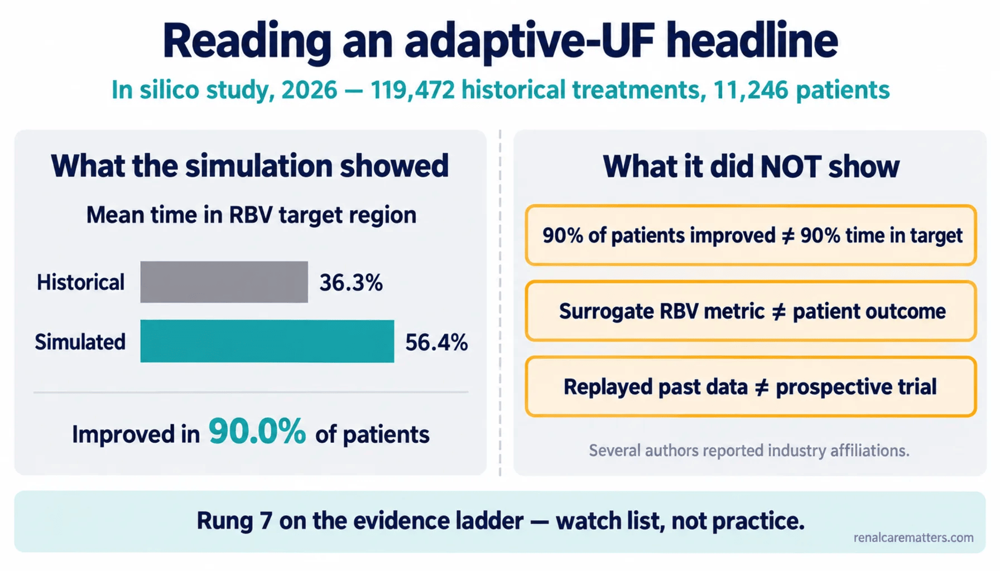
A computer simulation increased the share of each session spent in a target blood-volume range from about 36% to 56%, and that improved for 90% of patients. That does not mean 90% of the session was in range, and it has not yet been shown to help patients.
- UF
- Ultrafiltration
- RBV
- Relative blood volume
Absolute blood volume–guided management. A 2026 two-center prospective observational cohort of 600 patients described more favorable 12-week renin–angiotensin–aldosterone and BP patterns in the group managed with ABV monitoring than with clinical assessment.31 Group assignment was not randomized, so confounding cannot be excluded.
Education tools. A 12-week randomized study of 80 patients found that a "traffic light" fluid diary improved knowledge and intermediate fluid measures.30 It is a small, short, context-specific study, and color-coded adherence scores should not migrate into clinician judgments about patients.
Watch list. Conference-only results (for example, small spironolactone studies in incremental HD presented as abstracts) and registered trials without published results are tracked here and are not used to support any recommendation in this guide.
Using This Guide in a Dialysis Unit
A unit can adopt the review structure without turning it into protocol medicine. A practical approach is a monthly multidisciplinary review (nephrologist, charge nurse, dietitian, pharmacist where available) of patients flagged by recurrent IDH, repeated high UFR on delivered time, persistent missed targets, or out-of-unit hypertension. Each review records the three axes, the data gaps, the options considered, the plan and the reassessment date.
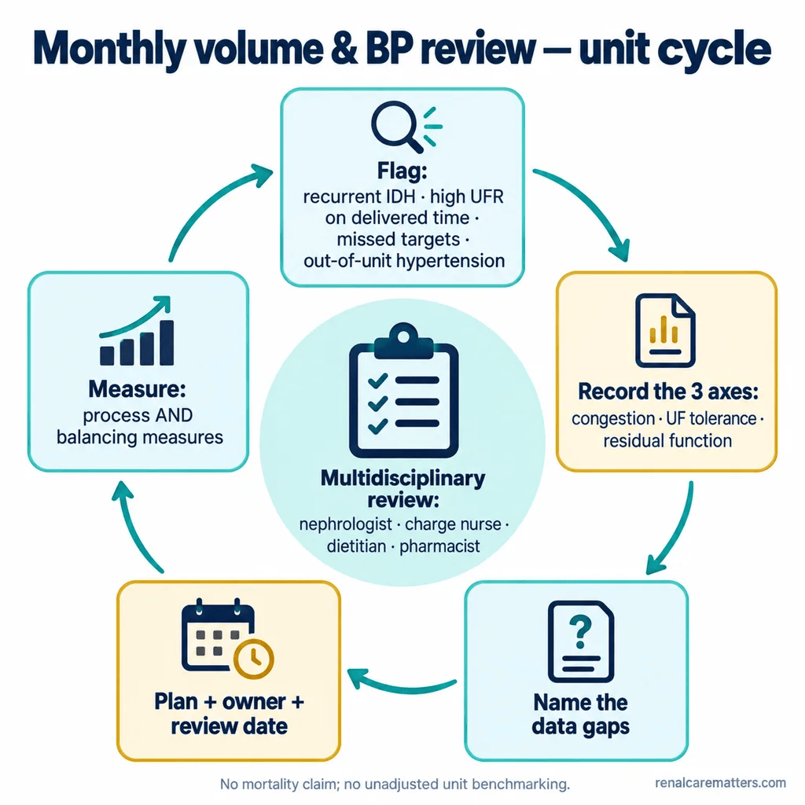
A monthly team review flags patients with recurring problems, records what is known and unknown about their fluid and blood pressure, sets a plan with an owner and a date, and tracks both benefits and side effects.
- BP
- Blood pressure
- IDH
- Intradialytic hypotension
- UFR
- Ultrafiltration rate
- UF
- Ultrafiltration
| Process measure (with explicit denominator) | Balancing measure |
|---|---|
| Recurrent-IDH reviews documenting BP context, congestion assessment, delivered time and UF, and medication review | Cramps and symptomatic IDH episodes per eligible session |
| Reviews with an explicit follow-up date and owner | Early terminations; saline rescue as locally defined |
| High-UFR flags calculated on delivered (not prescribed) time | Recurrent congestion; missed or shortened sessions; recovery time |
Local policies can add reviewed instructions — for example, your unit's IDH first-response steps — but should record the institution, author, approver, version, effective date and the reason for any divergence from the sources here. No claim is made that using this guide reduces mortality, and unadjusted unit outcomes should not be benchmarked against one another. For the quality-system wrapper — quality assessment and performance improvement (QAPI) versus continuous quality improvement (CQI) — see the dialysis QAPI vs CQI guide.
Key Studies at a Glance
Primary endpoint first, with its effect estimate and interval as reported. Abbreviations in the table: randomized controlled trial (RCT), meta-analysis (MA), hazard ratio (HR), risk ratio (RR), odds ratio (OR), incidence rate ratio (IRR), confidence interval (CI), cardiovascular (CV). "Read it as" states the main limit on inference. Numbers come from the source abstracts or full text indexed in PubMed; extraction depth beyond that is noted where it matters.
| Study | Design · N | Primary result | Read it as |
|---|---|---|---|
| UKKA 20252 | Graded guideline; search 2000–2022 | ABPM for diagnosis (1C); contextual in-center ranges (2B–2C) | Pre-dates 2025 trials |
| KDIGO 20201 | Consensus conference | No universal dialysis BP target; reassess on symptomatic fall or nadir <90 | Ungraded |
| HEMO UFR5 | Observational · 1,846 | UFR >13 vs ≤10: all-cause HR 1.59, CV HR 1.71 | Association; not a threshold |
| Weight-specific UFR6 | Observational · 396,358 | Risk-associated UFR varies with weight, sex, age, vintage | Not a personal calculator |
| TiME27 | Cluster RCT · 7,035 | No mortality difference; 9-minute separation | Underpowered by uptake |
| FHN daily28 | RCT · 245 | Death or left ventricular mass HR 0.61; more access interventions | Intermediate composites |
| DRIP18 | RCT · 150 | Ambulatory systolic −6.6 mmHg at 8 weeks | BP endpoint; more IDH symptoms |
| Cochrane sodium16 | Meta-analysis · 17 RCTs | IDWG −0.36 kg; IDH RR 1.58; cramps RR 1.84 | Short trials; sessions not patients |
| MyTEMP15 | Cluster RCT · 84 centers, 15,413 | CV composite HR 1.00 (96% CI 0.89–1.11) | Center-wide policy, not selected patients |
| TAKE-HOLD17 | Cluster RCT · 131 | TAKE not noninferior for IDH; less uncontrolled hypertension | 4 weeks; individual trade-off |
| HDPAL19 | RCT · 200 | Similar BP; more CV events with lisinopril (IRR 2.36) | Open-label; selected |
| ACHIEVE21 | RCT · 2,538 randomized (3,565 run-in) | CV death or heart-failure admission HR 0.92 (0.78–1.09); stopped for futility | No CV protection |
| ALCHEMIST22 | RCT · 644 | CV composite HR 1.00 (0.73–1.36); stopped for funding | Not futility; still neutral |
| CONVINCE23 | RCT · 1,360 | All-cause death HR 0.77 (0.65–0.93) with high-dose HDF | Selected HDF candidates |
| LUST9 | RCT · 367 | Composite HR 0.88 (0.63–1.24); congestion relieved more | Primary neutral |
| BISTRO10 | RCT · 439 | No slowing of progression to anuria | Structured comparator |
| CLIMB14 | RCT · 443 | More hospitalization with blood-volume monitoring | One historical protocol |
| Tools MA 202512 | Meta-analysis · 21 RCTs | CV events RR 0.79; cramps 1.09 | Overlap; bias concerns |
| Incremental MA24 | Meta-analysis · 36 studies | Mortality OR 0.87 (0.72–1.04) | Mostly observational |
| Adaptive UF29 | In silico · 11,246 | Time in RBV range 36.3% → 56.4% | Simulation only |
What has not been verified and is therefore not used
Unresolved slide citations from the lecture that prompted this guide, any named symptom scale cut-points, dialysate-sodium trial results not yet published, and drug doses. If you need one of these for local policy, verify it from the primary source first.